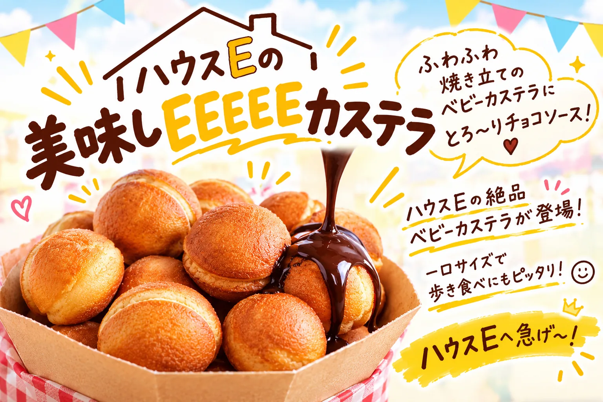
ハウスEの、美味しEEEEEベビーカステラ
ふわふわ焼き立てのベビーカステラにとろ〜りチョコソース！ ハウスEの絶品ベビーカステラが登場！ 一口サイズで歩き食べにもピッタリ！ハウスEへ急げ〜！
第6回カレッジ文化祭 ／ SHIMOKITA COLLEGE
ひとりの「好き」も、まだ言葉になっていない「問い」も。
ぜんぶ持ち寄って、混ぜてみる2日間。
※ 事前申し込みは Google フォームが別タブで開きます。当日の受付もできます。
※ このサイトは準備中です。決定した情報から順次公開していきます。
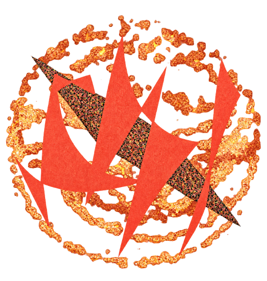
ABOUT
カレッジ文化祭は、SHIMOKITA COLLEGE に居住するカレッジ生が年に一度開催する文化祭です。
今年のスローガンは「まぜまぜ。」。カレッジ生一人ひとりの経験・専門性・関心・問い・好きなことを、文化祭という機会を通して表に出し、互いを知り、それらがコラボレーションされる。そんな面白くて楽しい文化祭を目指しています。
文化祭当日は SHIMOKITA COLLEGE の1階から5階までを開放し、カレッジ生による飲食企画やプロジェクトの発表展示、ゲストを招いたトークセッション等を行います。
カレッジへの印象を、
「おもしろそう」から
「おもしろい」へ。
CONCEPT
まぜまぜ。
「まぜまぜ。」とは、人の想いと人の想いが混ざり合い、一人では生み出せなかった何かが生まれることです。
異質な他者と日常を共にする中で、誰かの存在によって新しい自分に気づいたり、「この人とならやってみたい」と思えたりする瞬間があります。 一人ひとりの好きなこと、得意なこと、問いやアイデア。それらが持ち寄られ、交わることで、想像もしなかった企画や表現が生まれていきます。
この文化祭では、完成されたものだけでなく、そこに至るまでの出会いや関係性も大切にしたいと考えています。 つくる人も、訪れる人も、偶然居合わせた人も。それぞれの想いが混ざり合い、新しい発見や笑顔が生まれる。 そんな文化祭を作ります。
PROGRAM
審査を経て採択された企画をご紹介します。企画は決まり次第このページに追加していきます。

ふわふわ焼き立てのベビーカステラにとろ〜りチョコソース！ ハウスEの絶品ベビーカステラが登場！ 一口サイズで歩き食べにもピッタリ！ハウスEへ急げ〜！
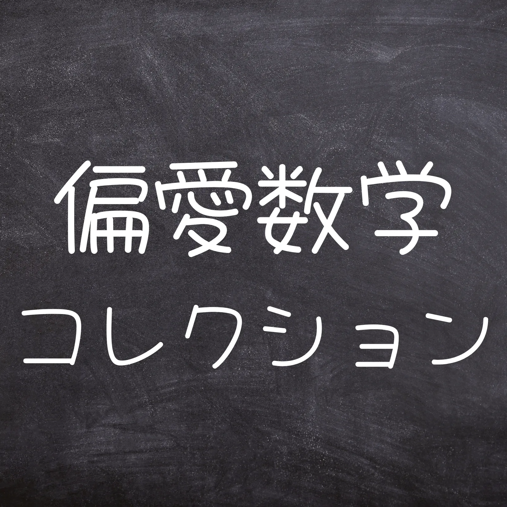
「この証明、美しすぎる…！」数学好きたちの“推し証明, 命題”を一堂に集めました。 数学好きでもどんな所に魅力を感じているのかは人それぞれ。 どんな所が好きなのか、そもそも数学の魅力って何なのか、その一端を知ることができる場です。 あなたも”推し”、見つけに来ませんか？
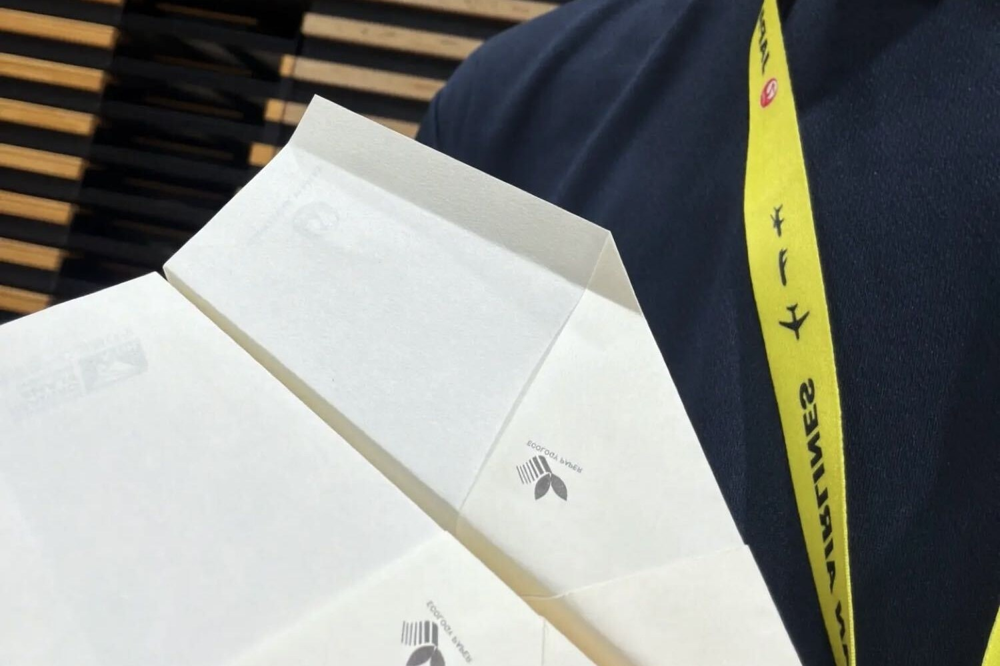
私が小学生時代に紙飛行機の滞空時間競技で九州大会優勝・世界ランキング32位となったノウハウを紹介します。
紙飛行機を「見る・作る・競う」の3つの方法で楽しめる参加型企画です。 展示では、折り方、翼の角度、重心、投げ方によって飛び方が変わる仕組みを紹介します。展示品は購入することもできます。 教室では、来場者に長く飛ぶ紙飛行機の折り方と投げ方を教えます。 大会では、参加者が自ら飛行機を折り、飛距離を競います。
これまで「なんとなく」遊んできた紙飛行機について、本気で勉強してみませんか。
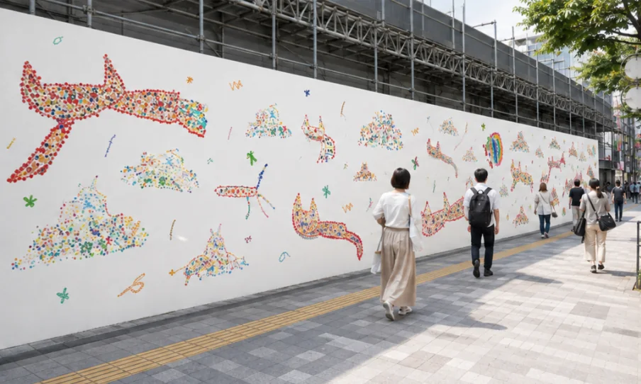
古着、カレー、音楽、コーヒー。いろんな文化がとなり合う下北沢には、「演劇の街」という顔もあります。
駅のまわりに、劇場が10以上。その始まりは、元映画俳優の本多一夫さんが1981年に稽古場を劇場に変えたことでした。 ひとりの夢を、劇団や観客、街の人たちが一緒に育ててきた文化を紹介します。
地元の中高生と劇場をつなぐ、街の新しい取り組みも。ぜひ見に来てください。
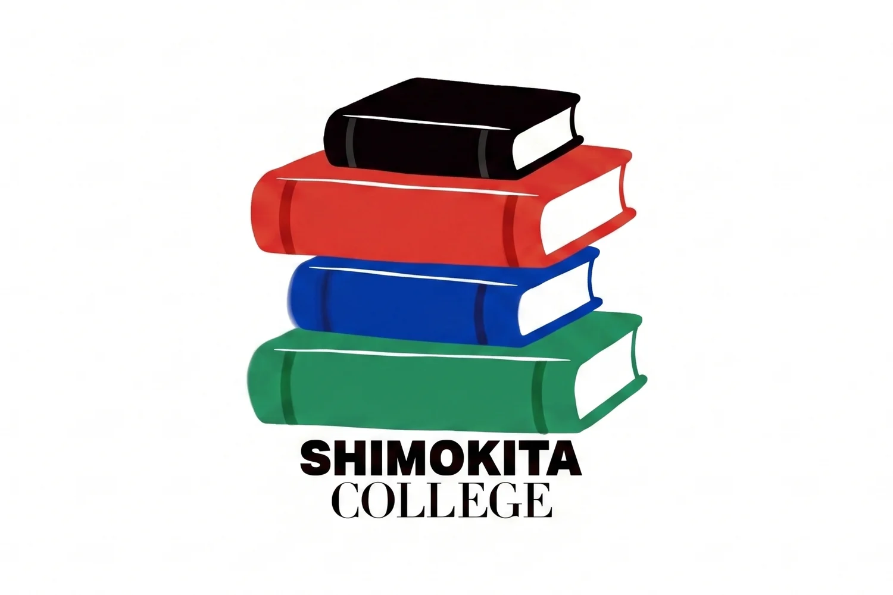
みなさんこんにちは！SHIMOKITA COLLEGE図書委員会です！
図書委員会では見知らぬ人と手紙交換できる企画と図書委員による展示を行います！ 特に手紙交換はみなさんに参加いただけますので、ぜひご参加ください。
文化祭へのご来場、心よりお待ちしています！
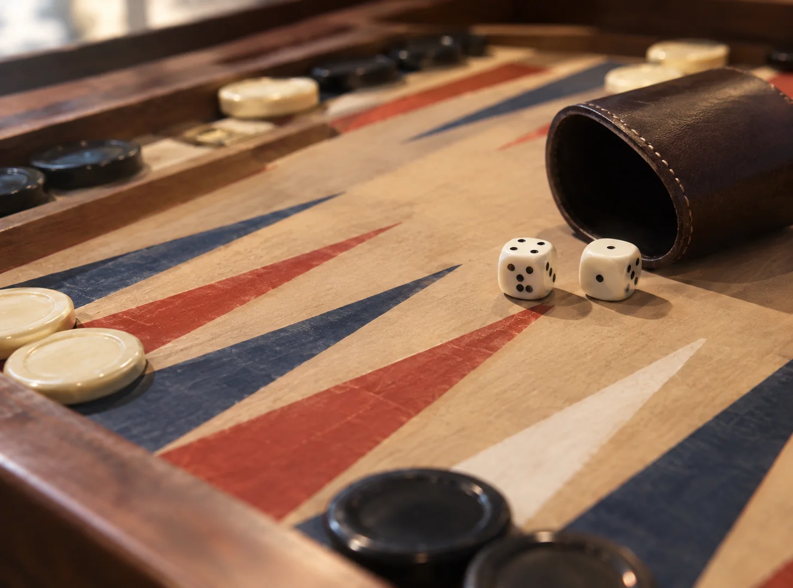
バックギャモンは、サイコロの出目に応じて駒を進め、相手よりも早くすべての駒をゴールさせるボードゲームです。 運と戦略、そして相手との駆け引きが勝敗を左右するゲームとして、古くから世界中で愛され続けています。
今回は、当カレッジの学生が盤面のデザインから制作まで、こだわりを詰めて一つひとつ作り上げました。 世界にひとつだけのオリジナル・バックギャモンを、ぜひ会場でお楽しみください！
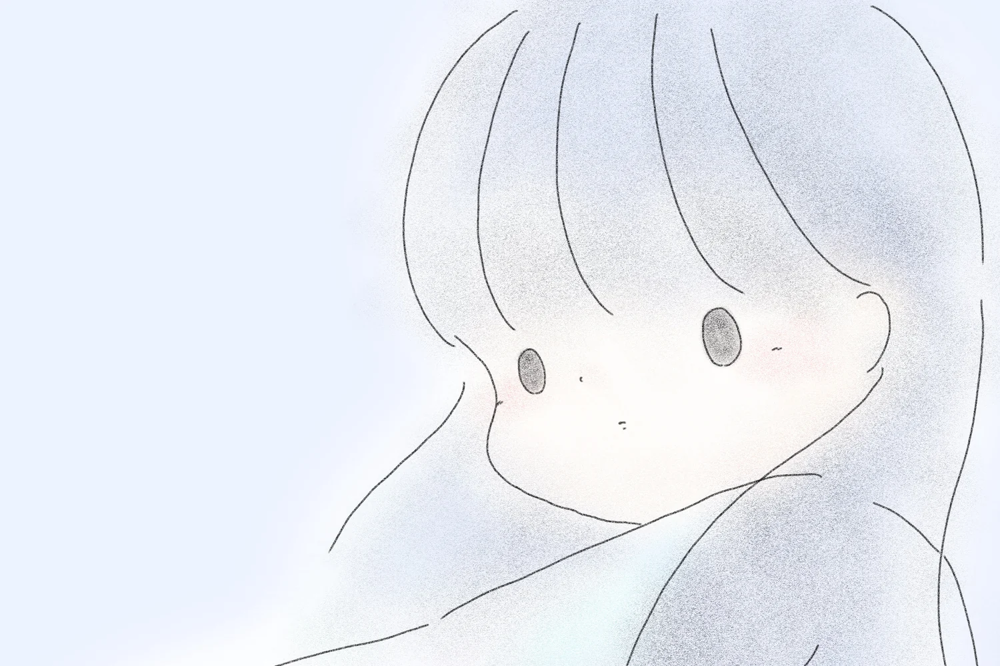
不安やもやもやで、こころがくもり空のとき。
そんな気持ちをふんわり包み込む、イラストと言葉、音楽の展示です。
あなたの歩くみちに、そっと寄り添えますように。
シモキタ連携委員会は、下北沢のまちと下北カレッジをつなぐ委員会です！ 地域のお祭りやイベントへの参加、まちの人へのインタビュー、情報発信などを通して、地域とのつながりを育んでいます。 また、学生の興味や関心を起点とした地域プロジェクトの企画・運営にも取り組んでいます。 委員会内外のカレッジ生を巻き込みながら、地域の人と出会い、一緒にまちを盛り上げることを目指しています。 一人ひとりのやってみたいを大切に、活動の輪を広げています！
今回の文化祭では今までのシモキタ連携での活動を紹介します。 シモキタ連携のまちとのつながりを見に来てください！
多様なカレッジの多様な占い。誰に占ってもらえるか？
占いの結果が顔に移る可能性も、、！
出展場所・販売価格・営業時間は決まり次第お知らせします。 詳細 調整中
GOODS
今年の SHIMOKITA COLLEGE 文化祭「まぜまぜ。」の開催を記念して制作した、オリジナルスウェットです！
文化祭のキービジュアルをあしらった、今年だけの特別なデザイン。 文化祭の思い出としてはもちろん、普段使いにもぴったりの一着です！
ブラックとホワイトの2色をご用意しました。
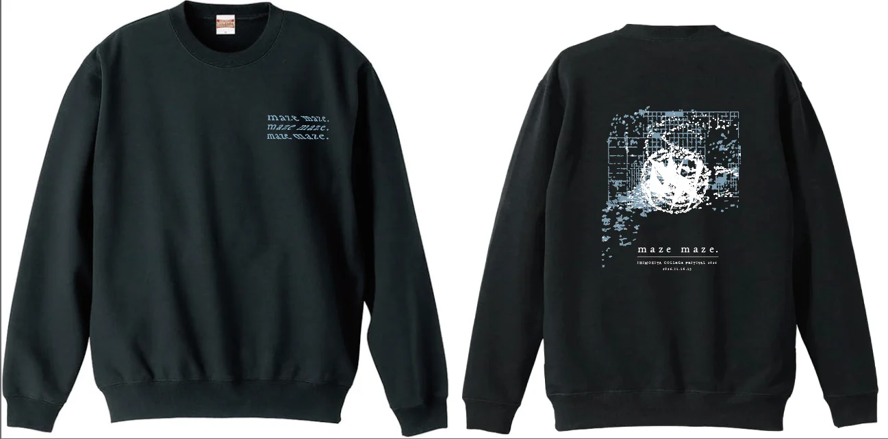
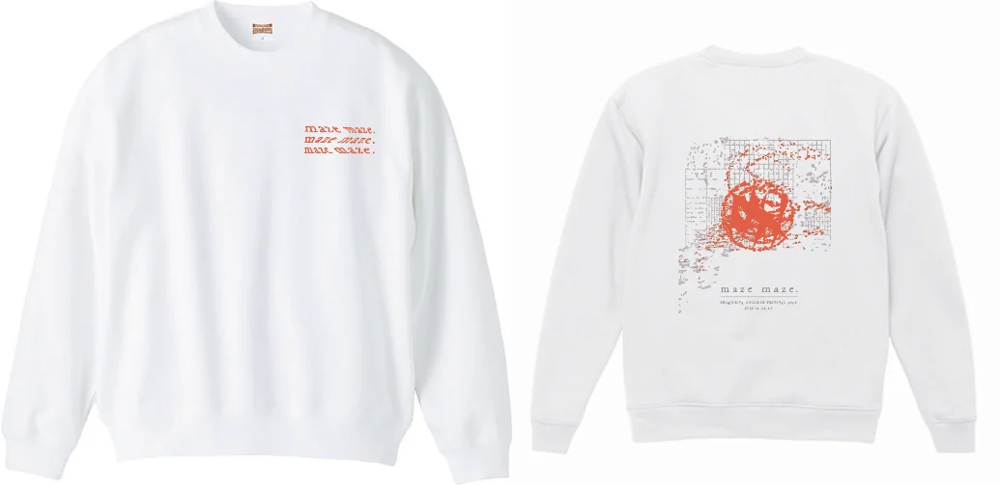
※ Google フォームが別タブで開きます。 価格・サイズ展開・受け取り方法は調整中
MY PROJECT / OUR PROJECT
カレッジ文化祭の中心にあるのは、カレッジ生ひとりひとりが立ち上げる企画です。
MY PROJECT
カレッジ生が、自分の興味・関心・特技をゼロから自由に企画し、表現する枠です。 展示だけでなく、ワークショップや、空間そのものを使ったインタラクティブな企画も。
OUR PROJECT
2人以上の組み合わせから、普段は生まれにくい企画をつくる今年の重点施策。 「まぜまぜ。」を企画そのもので体現する枠です。委員会・ハウス・クラブによる企画もここに含まれます。
今年はエントリー制（応募制）を導入し、審査会を経て採択された企画が並びます。 内容や運営体制がしっかりと準備された企画を、最高の形で来場者に届けるためです。 採択された企画は「出展企画」でご紹介しています
どんな企画が並ぶのか。前回の文化祭で実施された企画の一部を紹介します。
CONTENTS
現在、カレッジ生から集まった企画の審査・準備を進めています。 内容は決まり次第このページで公開します。
1階のステージで、ゲストを招いたトークセッションを中心に全8企画を予定。カレッジ生による企画枠もあります。
カレッジ生による飲食出店と、寮の食堂「リラ食」。あたたかい飲みものも用意します。
ひとりの「やりたい」から始まる企画と、複数人でつくる企画。展示・体験企画として各フロアに並びます。
建物まるごとを使った回遊型の謎解き企画。1階に受付を設けます。
カレッジ生が一体となってつくる文化祭アート。「カレッジとはどんな空間なのか」を体験できる空間を設計します。
キービジュアルを使ったTシャツ・缶バッジ・ステッカーなどのオリジナルグッズを予定しています。
SHIMOKITA COLLEGE での「暮らしながら学ぶ」日常そのものを紹介する展示です。
FLOOR GUIDE
1階から5階まで、建物まるごとが会場です。 フロア割りは検討中のため変更の可能性があります
ひとりの探究がかたちになった場所。
複数人でつくった企画の発表・体験スペース。
図書委員会などカレッジ内の委員会による企画も予定。
食べて、休んで、カレッジの日常をのぞく階。
入口はここから。文化祭のいちばん賑やかな階。
VENUE
SHIMOKITA COLLEGE は、多様性豊かな高校生・大学生・若手社会人が寝食を共にする中で互いに学び合い、新たな教育的価値をもたらす学生寮です。2020年12月開業。
地上5階建て・全102室の館内には、食堂付きの大きなラウンジ空間や、個々の学習をサポートするライブラリー、暖炉を囲む語らいの場や屋上菜園など、多様な共用設備があり、「暮らしながら学ぶ」環境が用意されています。現在、約120名の高校生・大学生・若手社会人が互いの経験を持ち寄って刺激的な毎日を送っています。
ACCESS
FAQ
はい。カレッジに関わりのある方はもちろん、これまで SHIMOKITA COLLEGE をご存じなかった方にもぜひ来ていただきたいと考えています。
入場は無料の予定です。事前予約の要否は現在調整中で、決まり次第このページでお知らせします。
お支払いは現金または PayPay です。価格は決まり次第お知らせします。
企画の審査・調整が完了したのち、本サイトで公開します。最新情報は公式SNSでもお知らせします。
屋内が中心のため、雨天でも開催します。屋外企画については一部内容を変更する場合があります。
お子さま連れでも楽しんでいただける企画を予定しています。詳しい対象年齢や注意事項は、企画一覧の公開時にあわせてご案内します。
企画の詳細・タイムテーブル・来場案内は、決まり次第このサイトと公式SNSで公開します。
お問い合わせは festival-shimokita@hlab.college までお気軽にどうぞ。
※ SNS のリンクは準備中です。
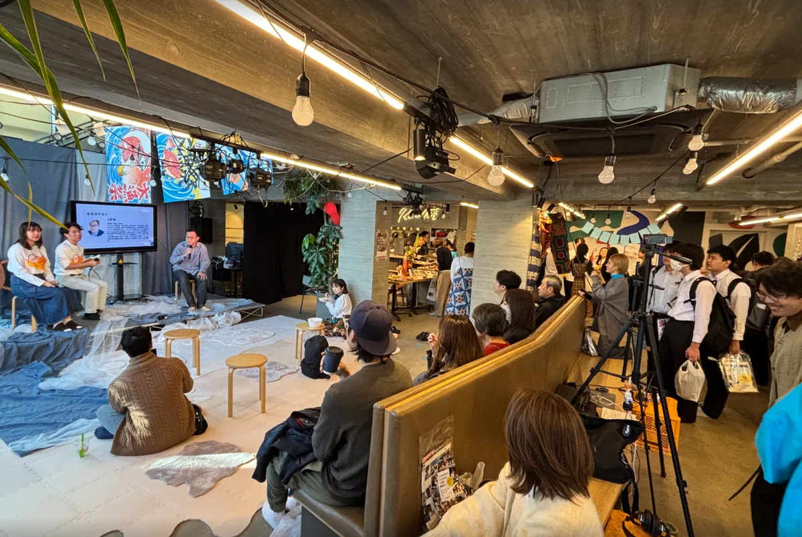
INTRODUCTION
SHIMOKITA COLLEGE は、下北沢にある、高校生から社会人までが共に暮らしながら学ぶレジデンシャルカレッジです。 年に一度、住人であるカレッジ生が企画から運営までを手がける「カレッジ文化祭」を開催しており、今年で第6回を迎えます。
昨年度は「まちとつくる文化祭」をテーマに、2日間で約1,200名の方にご来場いただき、地域の企業・店舗の皆様からも温かいご支援をいただきました。
今年度のスローガンは「まぜまぜ。」。住人、卒業生、保護者、そして地域の皆様が、まざり合う2日間を目指しています。 この想いを一緒に形にしてくださる、協賛企業・店舗の皆様を募集いたします。
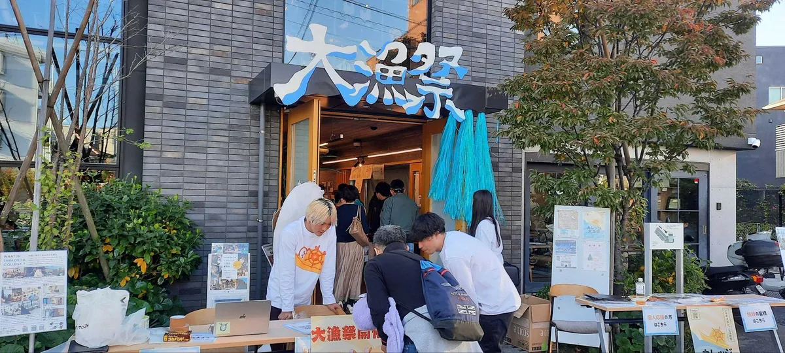
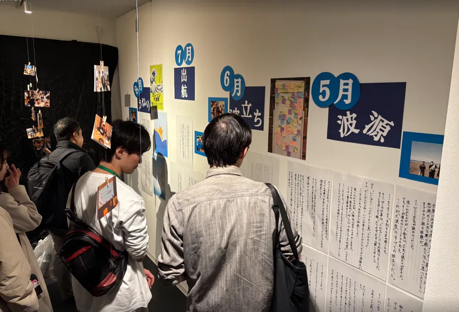
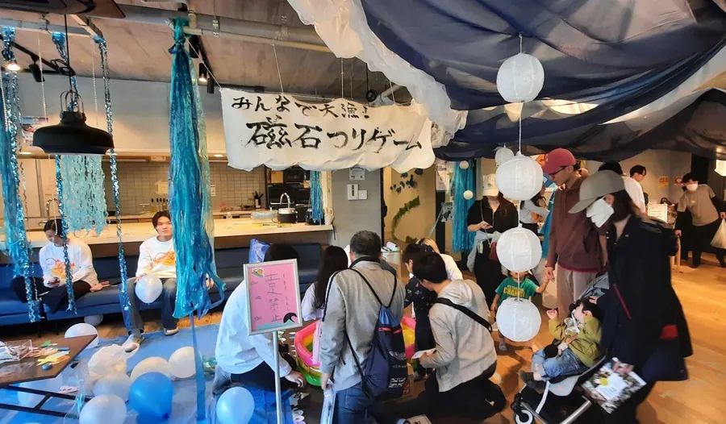
写真は昨年度の文化祭の様子です。
MERIT
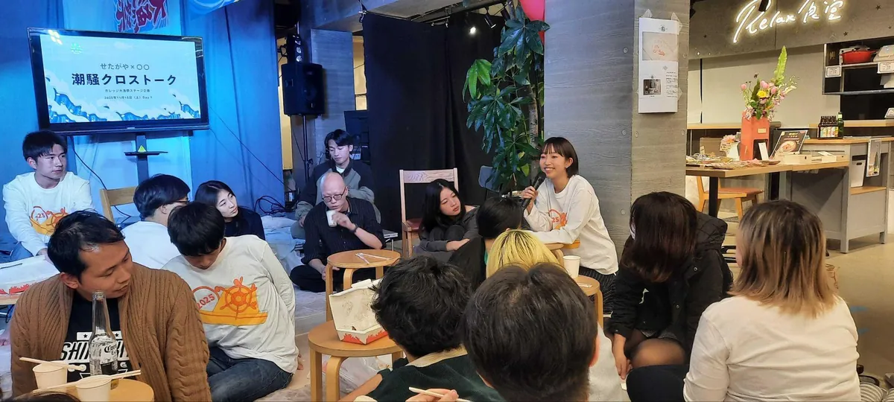
PLANS
3つのプランをご用意しています。
まずは名前で応援
10,000円
- リターン内容 -
「文化祭を応援したい」というお気持ちを、お名前で形にしていただくプランです。はじめて協賛される方や、まずは気軽に関わってみたい方におすすめです。
来場者全員にお配りするパンフレット、来場者が最初に目にする会場入口のボード、文化祭のホームページの3か所に、社名・店名を掲載します。
受付で来場者にお渡しする案内と一緒に、貴社・貴店のチラシや商品券を1種類お配りします。
おすすめ
お店・会社を知ってもらう
30,000円
- リターン内容 -
来場者に、貴社・貴店を「知ってもらう」ことに力を入れたプランです。地域の方や若い世代に、お店や会社を覚えてもらいたい方におすすめです。
10,000円プランと同じ3か所に、ロゴを大きく掲載します。文字だけよりも目に留まりやすく、来場者の記憶に残りやすくなります。
会場内の、来場者が行き交う場所に、貴社・貴店のポスターを1枚掲示します。営業時間やおすすめの商品など、伝えたいことを自由に載せていただけます。
チラシや商品券など、2種類までお配りします。
1社限定
当日、来場者と直接つながる
50,000円
- リターン内容 -
文化祭当日に、来場者と直接お話しいただけるプランです。1社限定でのご案内となります。
館内に貴社・貴店の専用ブースをご用意します。商品やサービスの紹介、体験など、ブースの使い方はご相談のうえ一緒に決めさせていただきます。
30,000円プランと同じく、ロゴを大きく掲載します。
文化祭のホームページに、いただいた紹介文や写真をもとにした、貴社・貴店の紹介ページを作成します。
30,000円プランと同じく、会場内にポスターを1枚掲示します。
配布物の種類に制限はありません。
COMPARISON
| 項目 | 10,000円 | 30,000円 おすすめ |
50,000円 1社限定 |
|---|---|---|---|
| ホームページ掲載 | 社名・店名 | ロゴ（大） | 紹介ページ |
| パンフレット掲載 | 社名・店名 | ロゴ（大） | ロゴ（大） |
| 会場入口ボード | 社名・店名 | ロゴ（大） | ロゴ（大） |
| 会場内にポスター掲示（1枚） | × | ○ | ○ |
| 受付でのチラシ・商品券配布 | 1種類 | 2種類 | 制限なし |
| 専用ブース出展 | × | × | ○ |
| 写真付き活動報告 | ○ | ○ | ○ |
HOW WE USE IT
いただいた協賛金は、当日の装飾、ステージ、飲食、パンフレット、前夜祭・後夜祭など、文化祭の運営に大切に活用させていただきます。
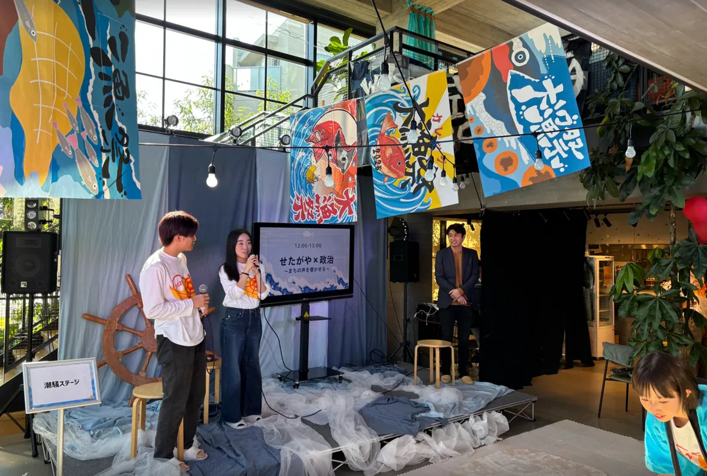
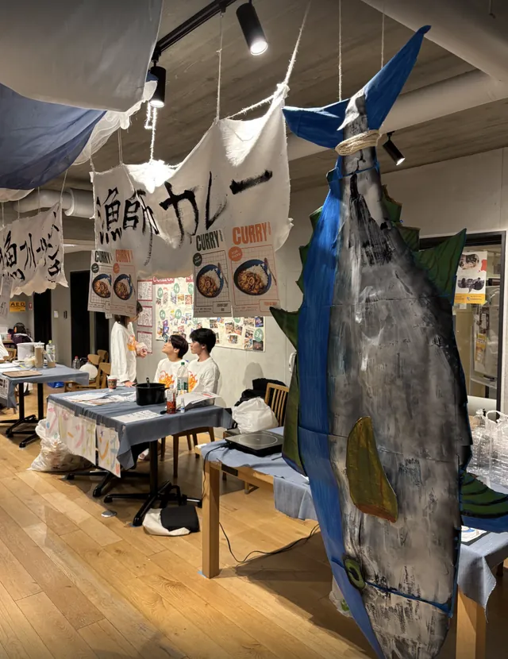
HOW TO APPLY
下記のフォームより、お問い合わせ・お申し込みください。担当者より折り返しご連絡いたします。 ご希望があれば、担当者が直接ご説明に伺います。
カレッジ生の挑戦の集大成である「カレッジ文化祭」。
地域や企業の皆様の力強いサポートがあってこそ、この特別な2日間が完成します。
皆様からのご協賛を、心よりお待ちしております。
INTRODUCTION
昨年度も多くの方々にご支援・ご協力いただいた SHIMOKITA COLLEGE の文化祭。 今年も、カレッジ生一人ひとりの「やりたい」や「学び」が詰まった熱い2日間を作り上げるべく、 個人応援＆企業・地域協賛の募集を開始いたしました！
皆様とより直接的に・温かくつながる形で運営を行ってまいります。
カレッジ生を温かく見守り、背中を押してくださるアラムナイ（卒業生）の皆様、保護者の皆様、 そして地域のファンの方々に向けた個人応援プランです。 今年度は、皆様からの応援によりお応えできるよう、返礼品・特典を大きくパワーアップいたしました！
PLANS
3つのコースからお選びいただけます。
コース①
1,000円
- 返礼品・特典 -
コース②
5,000円
- 返礼品・特典 -
コース③
10,000円
- 返礼品・特典 -
RETURNS
ボード掲載は全プラン／パンフレット掲載は5,000円以上
昨年度もご好評いただいたお名前掲載ですが、今年度は当日の配布パンフレットだけでなく、 「会場入り口に掲載する特設ボード」にもお名前を記載（任意）させていただきます！ ご来場の際は、ぜひご自身のお名前を探してみてください。
今年度は、文化祭限定のオリジナルデザインスウェットや非売品のオリジナルステッカーを制作いたしました！ 日常でも使える素敵なグッズとしてお買い求めいただけるほか、 売上の一部は文化祭の運営資金として大切に活用させていただきます。
HOW TO APPLY
今年度は、よりスムーズで直接的なサポートを受け付けるため、下記の方法にてご寄付・応援を承ります。 ご協力・応援いただける方は、お申し込み用フォームより必要事項をご入力のうえ、お申し込みください。